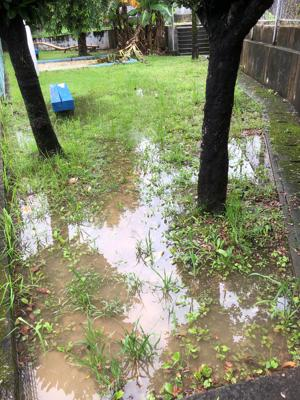
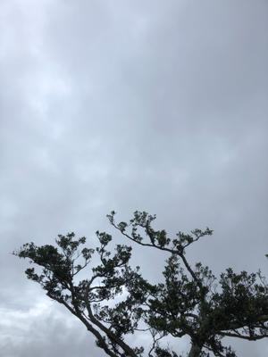
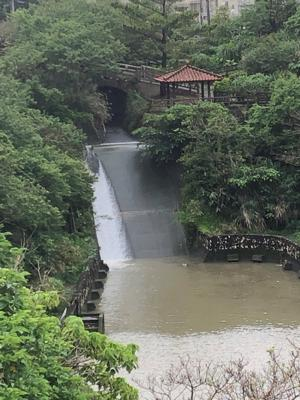

うるがいの話 ある日
最新: 図書除菌機【うるがいの話 ある日】とは 一日だけのプログです
『うるがいの話』の最新一日だけのプログで、通信料が少なく経済的だ。カニの画像をクリックすると全ての日付が載る『うるがいの話』サイトを表示します
|
|
【うるがいの話】 うるがい(ｳﾙｶﾞｲ urugai)とは、『もずくがに』の名前でとても大きくなります。 |
|---|---|
|
|
【カミマヤーの話】 猫のことを方言でマヤーといいます。カミマヤー（kamimayaa）とは、神の猫のことです。 |
|
【たながぁの音楽】 たながぁ（ﾀﾅｶﾞｰ tanagaa）とは手長えびのことで、何種類かあり大きいのは車 エビぐらいになります。 |

|
【ぶながぁの話】 ぶながぁ(ﾌﾞﾅｶﾞｰ bunagaa)とは、赤い髪の毛、赤い身体、そして身長は１ｍ２０ｃｍ ぐらい、川の蟹を食べているの目撃された。場所は沖縄県国頭郡大宜味村のと ある村僕の隣近所に住んでいる爺さんから、聞いた話です。 |
|
|
【ギーマの話】 ギーマ(giima)とは、山原の里山に咲くスズランに似た、 花を付けます。実は食べられます、 気が付くと口の周りが紫になっています。 |
2022年05月29日 (日）図書除菌機
16:08
  

『借りた本は３日間日に日光に当てなければならないと投稿されているけど！
、知っている？』と図書館ヘビー利用者の私に尋ねる。え！、聞いたことがな
いけど、そんな運用していたらとんでもないけどと答える。
コロナで困ったこと
８２歳になる女性の投稿
コロナ禍で私が困っていたことがある。図書館に本を借りに行きたいが、借り
た本を３日間日に当てなければならないという。面倒くさいので、ずっと図書
館に行かなかった。しかし、やっぱり本が読みたい。そこで天気予報を見て、
３日間晴れが続くことを確認して図書館を訪れた。本を借りて出ようとしたら
、出口近くに「図書除菌器」があり、係の人に聞いたら、紫外線と風により本
の雑菌を除菌するという。これぞ天の恵み!
今日とある図書館の窓口の担当者に日光に当てないといけないと新聞で投稿さ
れていましたが、そうですかと尋ねると、『そういうことは無いです』と回答
してくれた。ネットで調べると、確かに今年になってから県立と市立に図書除
菌機なるものを設置しているとの事（知らなかった）。投稿は、借りた人が除
菌が必要と勘違いしているようだ。でも、除菌できるのだったら図書除菌機を
利用したほうがいいかも。しかし、この人は天日干しを、マジにしたのであろ
うか・・・・。
１６時０３分 ビットコインの総資産 ￥１０、６８６↑